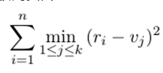

数字图像的像素可以用三个在0到255之间的整数表示,它们分别表示红色、绿色和蓝色的强度。为了压缩图片或是
为了产生艺术效果,许多图像编辑工具收录了如下所述的"色调分离"操作。每个颜色通道会分别考虑,本题只考虑红
色通道的情况。不同于在红色通道使用0到255之间全部的整数,一张色调分离后的图片只会使用这些数字里至多 k
种整数。每个像素原来的红色强度会被替换成最相近的可用强度。图像编辑工具会选择k个整数来最小化替换过程
引起的平方误差之和。假设原图有n个像素,它们的红色取值是r1,···,rn,而 k 种可用整数为v1,···,vk ,那
么平方误差之和被定义为

你的任务是计算可以实现的最小平方误差之和,参数k和图片的红色强度会给出。